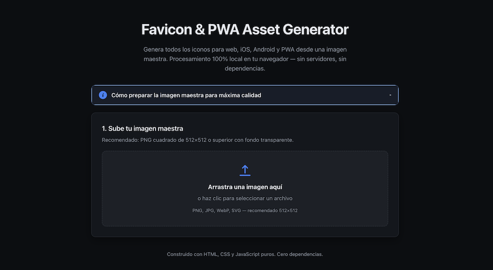

Productos reales en producción. Toca cualquier tarjeta para explorar.
En vivo

2026Zero dependencies
Favicon Generator — Assets PWA & Móvil
SPA que genera el set completo de favicons y assets para PWA/iOS/Android (16, 32, 48, 180, 192, 512) desde una imagen maestra. Construye archivos .ico nativos con ArrayBuffer/DataView, emite el site.webmanifest y guarda todo vía File System Access API. 100% client-side, sin librerías.